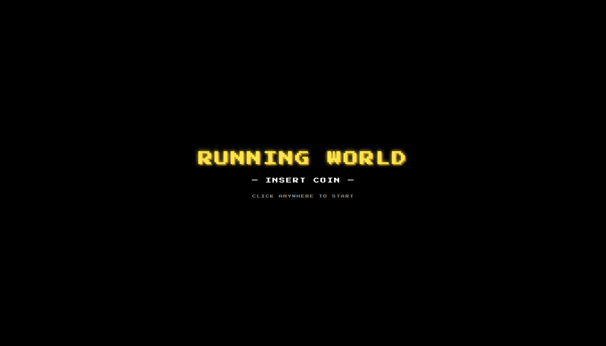
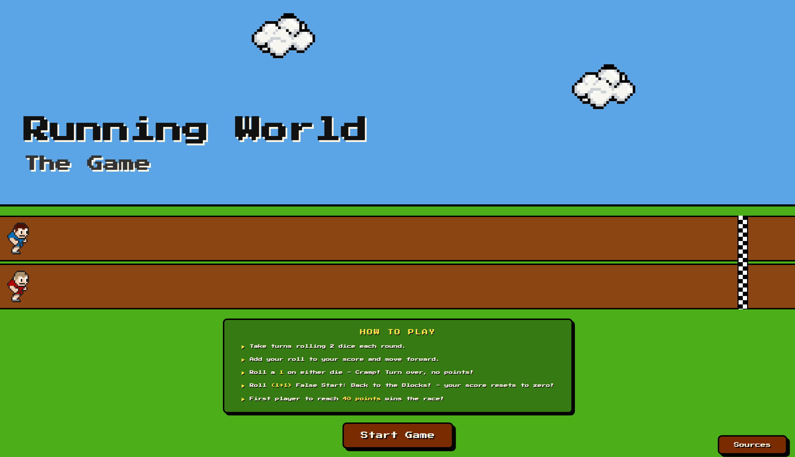

Play the Game
A two-player dice racing game built on the classic Game of Pig — skinned as an 8-bit arcade experience, complete with chiptune music, pixel runners, and a finish line worth sprinting for.

Concept
Since ancient times, games have served as platforms for human social interaction — igniting imagination, play, and cognitive engagement between people. This project takes that idea seriously. The assignment was to skin a simple dice game called Game of Pig, but the goal was to make something that actually felt like a game worth playing.
The aesthetic direction came early: classic 8-bit arcade games. Pixel runners. Chiptune music. A scoreboard that feels ripped from a 1980s cabinet. The retro framing turns a turn-based dice mechanic into something with genuine personality — two runners on a track, rolling dice, racing to 40 points before the other player gets there first.
Reading through the design research, one idea kept surfacing: the best games set clear objectives. Players need to know exactly what winning looks like — and feel every roll moving them closer to it.
— Design Research ReflectionThat principle shaped every design decision here. The finish line is always visible on the track. Your score is always in view. The moment you win, the background music cuts and a victory fanfare takes over. Nothing is ambiguous about where you stand.
Custom Features
Beyond the base Game of Pig rules, three custom additions push the experience further.
Player Name Entry
Before the race starts, both players enter their names. Those names are stored in the game data object and used throughout — in the turn indicator, score panels, and win screen — making the game feel personal rather than generic.
Animated Pixel Runners
Each player has a standing still-frame SVG and a running GIF. The runner swaps to the animated GIF on a successful roll, then returns to standing when the turn ends — giving visual feedback that mirrors the action of rolling and scoring.
Layered Audio System
Three audio tracks work together: looping background chiptune music starts at the splash screen, a running sound plays on each successful roll, and a victory fanfare fires when someone wins — pausing the background music before resuming it after the theme ends.
How the Code Works
The JavaScript is structured as a single IIFE (Immediately Invoked Function Expression), keeping all game logic self-contained and out of the global scope. All variables use ES6 const and let declarations, and "use strict" is enforced at the top of the closure.
The Game Data Object
Everything the game needs to track lives in one gameData object: the dice image paths as an array, both player names, both scores, the current roll values, whose turn it is (tracked as an index of 0 or 1), and the winning threshold. Keeping state in one place makes it easy to reset the game cleanly on restart — just reload the page.
The turn system is built around a single index value — gameData.index — which is either 0 or 1. Switching turns is a one-liner anywhere in the code:
gameData.index = gameData.index === 0 ? 1 : 0;
The throwDice() function handles the full logic of a roll: generating two random numbers, running a CSS spin animation on the dice images, then resolving one of three outcomes after a short timeout — snake eyes (score reset), a single 1 (turn over), or a clean roll (score added, runner moved).
Moving the Runners
The moveRunner() function calculates where on the track a runner should stand based on their current score. It reads the track's pixel width at runtime, defines the finish line at 94% of that width, and converts the player's score into a proportional pixel position. This means the layout works at any screen width — the runners always scale to the track they're on.
The audio system required careful sequencing. The win sound needed to interrupt the background loop, play fully, and then hand back to the background music — which meant listening for the ended event on the victory audio element and only restarting the background track once it fired.
soundWinEl.addEventListener('ended', function () {
playBgMusic();
});
Screen Flow
The game moves through four distinct screens — Splash, Home, Name Entry, Game, and Win — each managed by a single showScreen() function. Every screen is present in the HTML from the start; only one carries the active class at any time, which CSS uses to toggle visibility. This keeps the flow snappy with no page reloads between states.
- Splash Screen — click anywhere to start. This gate exists so the browser can begin playing background audio in response to a user gesture, which modern browsers require before allowing sound.
- Home Screen — rules overview, animated preview runners, and a Start Game button.
- Name Entry — two text inputs, defaulting to "Player 1" and "Player 2" if left blank.
- Game Screen — the full race: track, runners, scoreboard, dice, and roll button.
- Win Screen — trophy image, winner's name, and final score. A Play Again button reloads the page to reset all state cleanly.
In Action

Research Reflection
Three ideas from the design research stood out and shaped real decisions in this project. The first was the importance of clear goals — players should always know what winning looks like. The always-visible finish line on the track and the score counter overhead exist specifically for this reason. The second was playtesting: running through the game repeatedly exposed edge cases, like the need to disable the Roll button during animations to prevent double-inputs. The third was how UI placement affects engagement — the Roll button sits centered and large, making the primary action impossible to miss.
What's Next
Several optional extensions from the brief remain worth exploring. A "play against the computer" mode — where the CPU decides whether to roll or pass based on a simple probability check — would make the game playable solo. Allowing players to set their own winning threshold at the name entry screen would add meaningful pre-game strategy. And replacing the dice with cards could introduce a wider range of values and new special conditions.
For now, the core experience is complete: two players, two runners, and one finish line worth racing to.